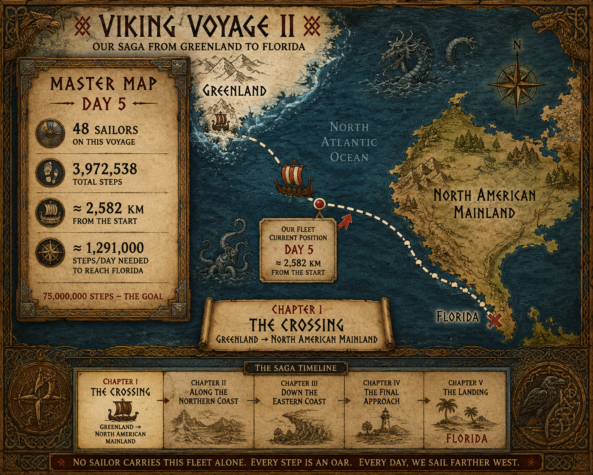
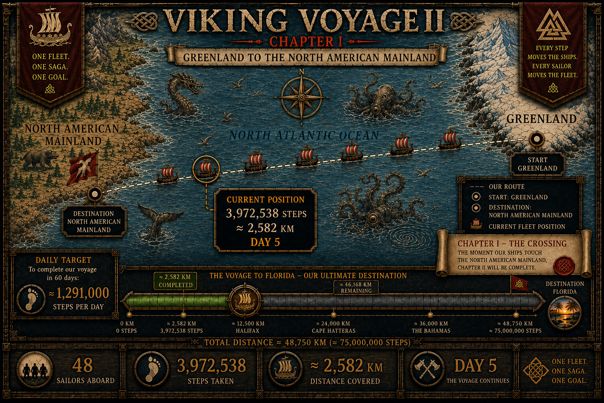
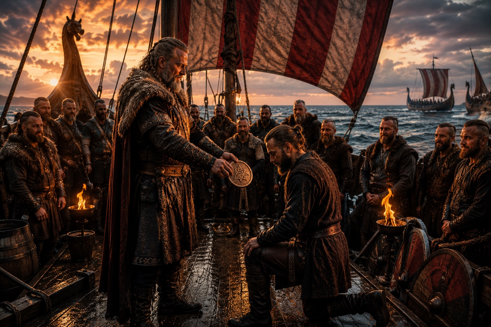

THE SHIP'S LOG
THE FLEET IS UNDERWAY
Real activity in Pacer moves the ship. These are the latest verified numbers from our crew.
ONE CREW
ONE SAGA
ONE SAGA
🐦⬛
HUGIN & MUNIN WATCH OVER US
🐦⬛
Every step is seen. Every effort matters. Every Viking belongs.
LATEST VIKING DISPATCH
NJÖRÐR HAS FILLED OUR SAILS
Day 7 brought 2,260,886 steps in a single day — approximately 1,470 km. Our total now stands at 7,446,095 steps, or approximately 4,840 km since Greenland.
Tonight the oars can rest. The wind is with us, the sails are full, and 61 sailors carry the fleet westward. Somewhere beyond the horizon, the western shore awaits.
61 SAILORS. ONE FLEET. ONE SAGA.
Chapter I — the crossing continues.
OUR MASTER MAP
THE CROSSING CONTINUES
The approved Greenland → North America → Florida route remains our fixed navigational reference. The fleet position develops only from the crew's real progress.

CHAPTER I
ACROSS THE NORTH ATLANTIC
Cold water behind us. A continent ahead. The first chapter follows the fleet away from Greenland toward the North American mainland.

THREE LAYERS — ONE EXPERIENCE
THE VOYAGE BECOMES A LIVING SAGA
HISTORY
Verified history and archaeology guide the places, people and events we encounter along the route.
MYTH & SAGA
The gods, ravens and stories of the Norse world give the crossing its mythic voice.
OUR SAGA
The crew's real steps decide the pace, the weather and the next chapter of the voyage.
CREW HONORS — THE NAMING
TWO NEW NAMES ENTER THE SHIP'S ROLL

Bear — an ancient Norse name given to a sailor who entered the fleet like a storm and moved straight toward the front.
An authentic Old Norse name given for refusing to stop — proof that persistence carries the whole fleet forward.
THE SHIP'S ROLL
NAMES CARRIED ABOARD
THE VOYAGE IN PICTURES
SCENES FROM THE VOYAGE
“Every step counts.
Every Viking matters.”